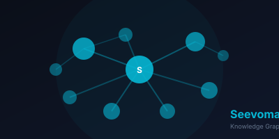

An interactive AI Research Knowledge Graph that visualizes the evolving landscape of scientific AI capabilities
Seevomap provides a dynamic, interactive way to explore and understand the capabilities of AI systems in scientific research.
Monitor how AI models perform across different scientific domains over time
Navigate through interconnected concepts and research areas
Identify emerging patterns and capability frontiers
